Tu día en cinco pasos
Si recién empezás, con esto alcanza. El resto del instructivo explica cada paso en detalle.
- Abrí Hoy y mirá cuánto hay vencido y para hoy.
- Recorré Pagos a cobrar de arriba hacia abajo: primero lo más atrasado.
- Mandá el WhatsApp o llamá. Cuando el cliente paga, tocá Pagó, Parcial o Reprogramar.
- Si alguien te promete un pago, cargalo como compromiso nuevo con monto y fecha.
- Antes de irte, fijate que no quede nada para hoy sin registrar.
1Qué es Agenda IC
Agenda IC es la herramienta del equipo para seguir la cobranza de Imperio Comercial. Lo central son los compromisos de pago.
Un compromiso es una promesa de pago: cuando un cliente te dice «el viernes te pago $30.000 de la cuota 5», eso se carga en la app con el monto, el concepto y la fecha. Ese día el pago aparece en la pantalla Hoy, en Pagos y en el Calendario, y te llega un aviso al celular. Cuando el cliente paga (o no paga), lo registrás con un toque.
La app también guarda las consultas: personas que preguntan por un producto. Cargás el nombre, el celular, qué busca y cuándo volver a llamarlo. A eso le decimos recontacto.
- Todo el equipo ve lo mismo. Los contactos, los compromisos y las notas son compartidos.
- Todo queda firmado. Cada compromiso muestra quién lo cargó («Cargó: Laura Gómez») y quién registró el pago.
- No manda emails. Los avisos están en la pantalla Hoy y en las notificaciones del celular o de la compu.
- Lee datos de SAS Imperio, pero nunca los cambia. Muestra las cuotas vencidas, el saldo y el cobrador del cliente. Nada de lo que hagas en la Agenda modifica SAS.
Palabras que vas a ver
| Palabra | Qué quiere decir |
|---|---|
| Contacto | La persona: un cliente que debe o alguien que consultó. Tiene una ficha con todos sus datos. |
| Compromiso | Una promesa de pago: monto, concepto (cuota, saldo, entrega…) y fecha. Un compromiso es un solo pago. |
| Vencido | Un compromiso pendiente cuya fecha ya pasó. |
| Reprogramado | El cliente avisó que paga otro día. No cuenta como incumplido. |
| Saldo | Lo que falta cobrar después de un pago parcial. |
| Recontacto | La próxima vez que hay que llamar a alguien que consultó. |
| Cumplimiento | De lo que los clientes prometieron pagar este mes (para días que ya llegaron), qué parte se cobró. |
2Ingresar e instalar la app
Entrá a agenda.imperiocomercial.com.ar desde cualquier navegador, con el usuario y la contraseña que te dio el administrador.
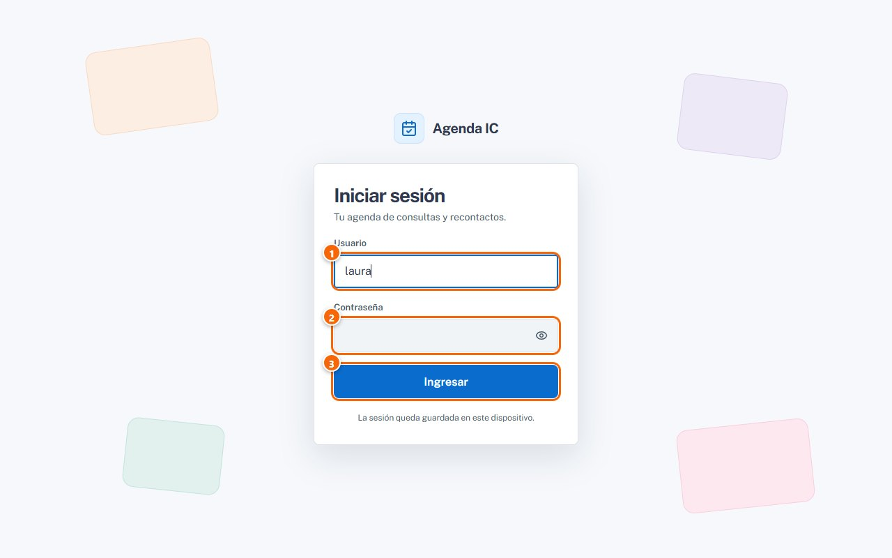
- Usuario. Tu nombre de usuario, tal como te lo dio el administrador.
- Contraseña. El ojito de la derecha la muestra o la oculta, para revisar lo que escribiste.
- Ingresar. También podés apretar Enter.
- La sesión queda abierta en ese dispositivo hasta 90 días: no tenés que ingresar cada vez que abrís la app. Para salir, andá a Ajustes › Cerrar sesión.
- Si la contraseña se escribe mal 5 veces seguidas, el ingreso se bloquea 15 minutos y aparece «Demasiados intentos. Esperá 15 minutos y probá de nuevo».
- Si usás una compu compartida, cerrá la sesión al terminar.
Instalarla como app
Agenda IC se instala como una aplicación más: queda un ícono en la pantalla de inicio, se abre a pantalla completa y carga más rápido.
| Dispositivo | Cómo se instala |
|---|---|
| Android (Chrome) | Menú ⋮ › Instalar app (o «Agregar a la pantalla principal»). También desde Ajustes › Instalar en Android. |
| iPhone o iPad (Safari) | Botón Compartir (el cuadrado con la flecha) › Agregar a inicio. |
| Compu (Chrome o Edge) | El ícono de instalar al final de la barra de direcciones. |
El iPhone solo deja recibir notificaciones si la app está agregada a la pantalla de inicio. Agregala y después activá las notificaciones desde Ajustes › Notificaciones (ver sección 16).
Sin internet podés mirar lo último que se cargó en pantalla, pero para registrar un pago o cargar algo nuevo necesitás conexión.
3Cómo está organizada
La app tiene cinco pantallas: Hoy, Contactos, Calendario, Pagos y Notas, más Ajustes.
| Pantalla | Para qué sirve |
|---|---|
| Hoy | El tablero del día: cuánto hay para cobrar, la tira de los próximos 14 días, los pagos a cobrar y los recontactos. |
| Contactos | Todos los clientes e interesados, con buscador. Desde acá abrís la ficha de cada uno. |
| Calendario | Los pagos y los recontactos por mes, semana o día. |
| Pagos | Todos los compromisos, con filtros, tres formas de verlos, exportación a Excel y el cumplimiento por usuario. |
| Notas | Anotaciones del equipo, con colores y recordatorio. |
| Ajustes | Instalar la app, notificaciones, etiquetas, plantillas de WhatsApp, equipo y contraseña. |
En la compu, las pantallas están en el menú de la izquierda; abajo de todo está tu nombre, que lleva a Ajustes. En el celular, están en la barra de abajo: Hoy, Contactos, Calendario, Pagos y Ajustes (Notas se abre desde Ajustes).
Los numeritos rojos sobre Hoy y Pagos avisan cuánto hay atrasado o para hoy: en Hoy cuentan los recontactos y en Pagos, los compromisos.
En el celular
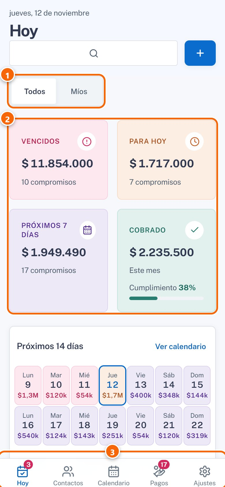
- Todos / Míos. Cambia entre lo de todo el equipo y lo que cargaste vos.
- Totales de cobranza, en dos filas.
- Barra de navegación. El botón azul + de arriba carga una consulta.
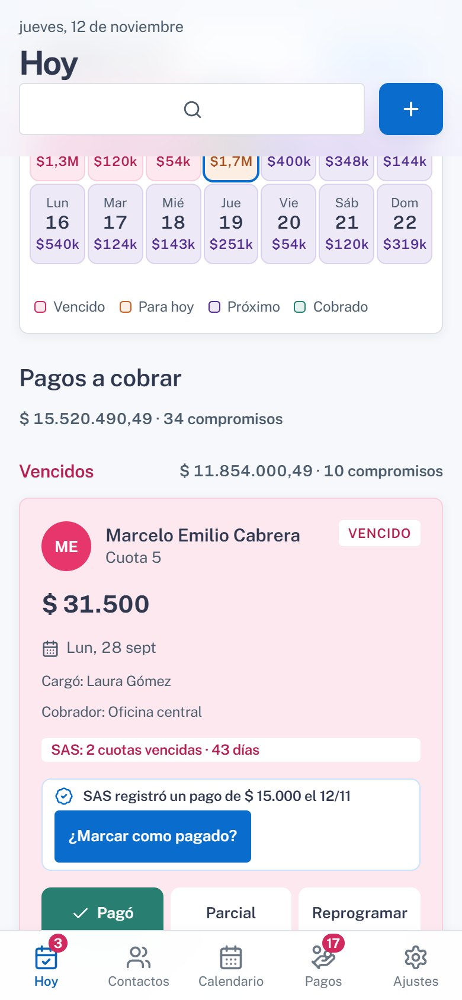
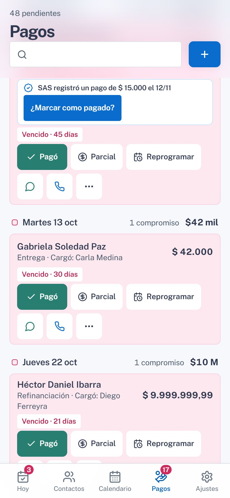
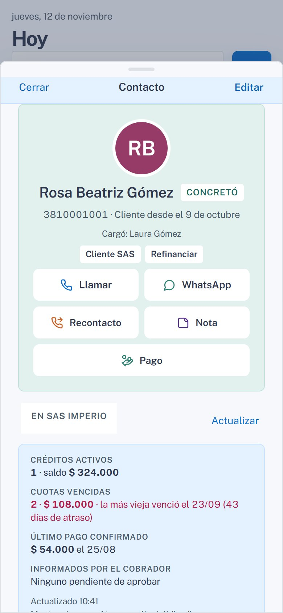
4Hoy: el tablero de cobranza
Hoy es la primera pantalla que ves al entrar. Arriba están los números de la cobranza y abajo, la lista de lo que hay que cobrar.
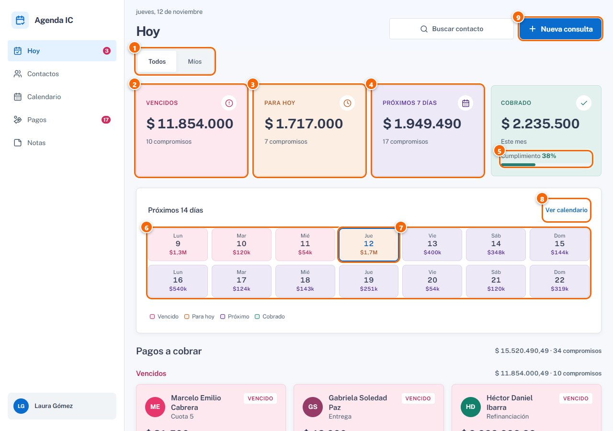
- Todos / Míos. «Todos» muestra los compromisos de todo el equipo; «Míos», solo los que cargaste vos. La app recuerda lo que elegiste en ese dispositivo.
- Vencidos. Lo pendiente cuya fecha ya pasó: monto total y cantidad de compromisos.
- Para hoy. Lo que vence hoy. Un pago de hoy sigue «para hoy» hasta la medianoche.
- Próximos 7 días. Lo que vence en la semana que viene.
- Cobrado y Cumplimiento. Lo que se cobró este mes y qué parte representa de lo prometido para los días del mes que ya llegaron.
- Próximos 14 días. Esta semana y la que viene, desde el lunes. Cada día muestra cuánto hay para cobrar: $54k son 54 mil pesos y $1,2M, 1,2 millones. Tocá un día para verlo en el Calendario.
- El día de hoy, con un borde azul.
- Ver calendario abre el Calendario completo.
- Nueva consulta carga una persona que pregunta por un producto. Al lado, Buscar contacto encuentra a cualquier cliente.
Los colores de la tira son los mismos de toda la app: Vencido Para hoy Próximo Cobrado. Un día en verde quiere decir que ese día ya está todo cobrado.
Pagos a cobrar
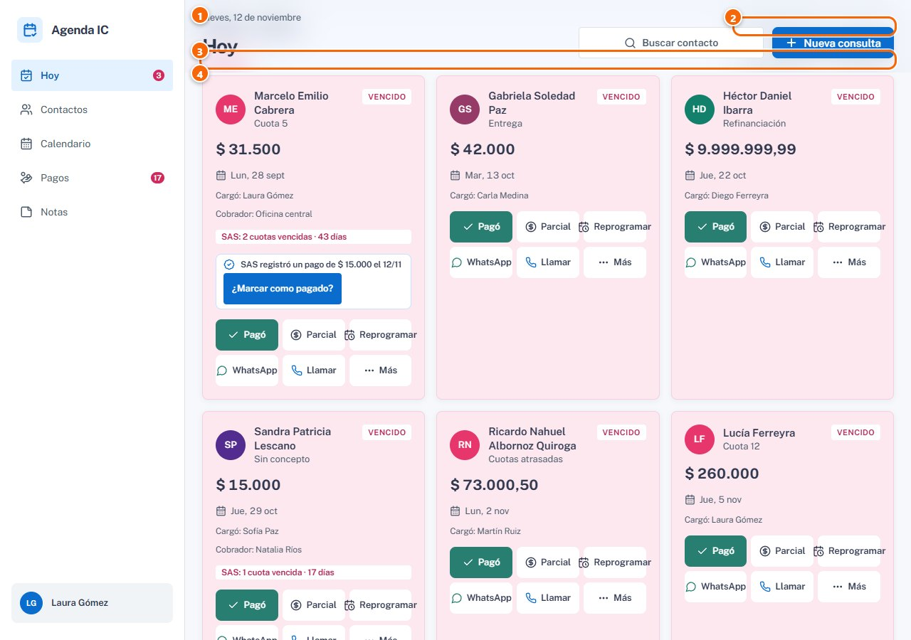
- Pagos a cobrar. Los compromisos pendientes hasta dentro de 7 días.
- Total de todo lo que está en la lista.
- Cada grupo (Vencidos, Hoy y después cada día) tiene su subtotal.
- Cada tarjeta es un compromiso, con sus botones para registrar el pago (ver sección 5).
Primero aparecen los vencidos, del más viejo al más nuevo; después, los de hoy y los de los próximos días. Lo que vence más adelante está en la pantalla Pagos: al final de la lista hay un enlace Ver los demás pagos pendientes en Pagos.
Recontactos
Debajo de los pagos está la parte de las consultas. Muestra a quién hay que volver a llamar, con un anillo que se va completando a medida que hacés los recontactos del día. Los botones de arriba filtran la lista: Todos, Vencidos, Para hoy y Próximos.
Cada tarjeta de recontacto tiene cuatro botones:
- Llamar y WhatsApp: abren la llamada o el chat con ese número.
- Posponer: si el recontacto era para hoy, lo pasa una hora más tarde; si estaba atrasado, a mañana a las 9:00.
- Nota: anota algo en el historial del contacto sin cambiar la fecha.
Tocando el nombre se abre la ficha, donde registrás cómo te fue (ver sección 13).
5La tarjeta de un compromiso
Cada compromiso se muestra como una tarjeta del color de su estado. Tiene todo lo necesario para cobrar sin abrir nada más.
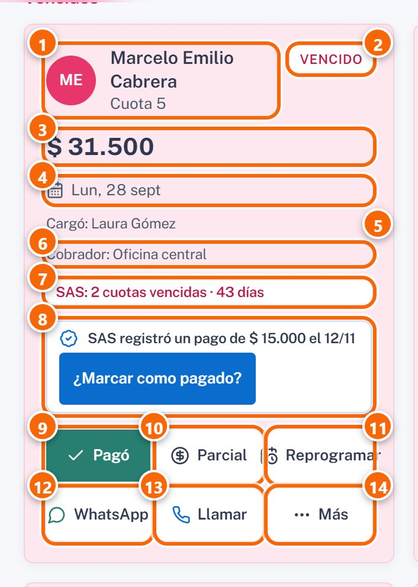
- Cliente y concepto. Tocá el nombre para abrir su ficha.
- Estado: vencido, para hoy, próximo, pagado…
- Monto prometido.
- Fecha del pago.
- Cargó: quién cargó el compromiso.
- Cobrador que el cliente tiene asignado en SAS.
- Chip de SAS: cuántas cuotas tiene vencidas en SAS y cuántos días de atraso.
- Sugerencia: SAS registró un pago posterior a la fecha. Si corresponde, tocá ¿Marcar como pagado?
- Pagó: pagó todo.
- Parcial: pagó una parte.
- Reprogramar: avisó que paga otro día.
- WhatsApp: manda el recordatorio con la plantilla que corresponde.
- Llamar al celular del cliente.
- Más: No pagó y Abrir detalle.
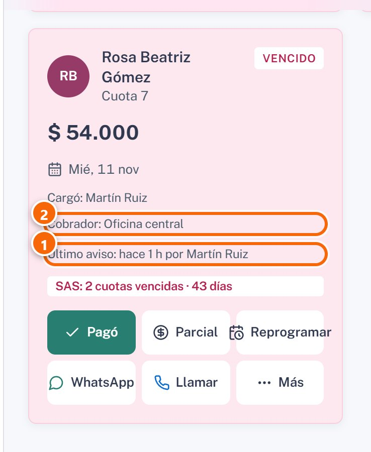
- Último aviso: cuándo se mandó el último recordatorio y quién lo mandó, para no repetirlo.
- Cobrador del cliente en SAS.
El chip de SAS y la sugerencia solo aparecen si el contacto está vinculado con su cliente de SAS Imperio (ver sección 10).
6Registrar un pago
Cuando el cliente paga, o avisa que no puede, lo registrás desde la misma tarjeta. Son los mismos botones en Hoy, en Pagos y en el Calendario.
¿Qué botón uso?
| Lo que pasó | Botón | Cómo queda |
|---|---|---|
| Pagó todo lo prometido | Pagó | Pagado |
| Pagó una parte | Parcial | Parcial y, si querés, un compromiso nuevo por el saldo |
| Avisó que paga otro día | Reprogramar | Reprogramado y un compromiso nuevo para el día nuevo. No baja el cumplimiento. |
| No pagó y no avisó | Más › No pagó | Incumplido. Baja el cumplimiento. |
| Quiero dejar una nota o cargar todo a mano | Más › Abrir detalle | Lo que elijas en el formulario |
| Me equivoqué | Deshacer | Vuelve a pendiente |
Pagó todo
Tocá Pagó. El compromiso queda pagado por el monto completo, a tu nombre, y abajo aparece un aviso durante 6 segundos.
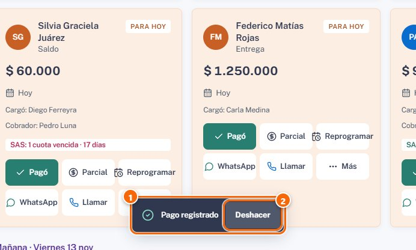
- Pago registrado. Confirma qué se guardó.
- Deshacer. Si tocaste sin querer, lo vuelve a pendiente.
Si el aviso ya se fue, el compromiso registrado sigue teniendo su botón Deshacer en la ficha del contacto y en Pagos (filtro Pagados, Incumplidos o Reprogramados).
Pagó una parte
Tocá Parcial. Son dos pasos:
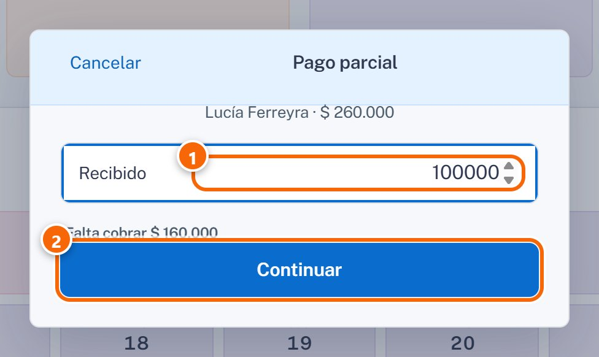
- Recibido: lo que te dio, sin puntos (por ejemplo 100000).
- Continuar.
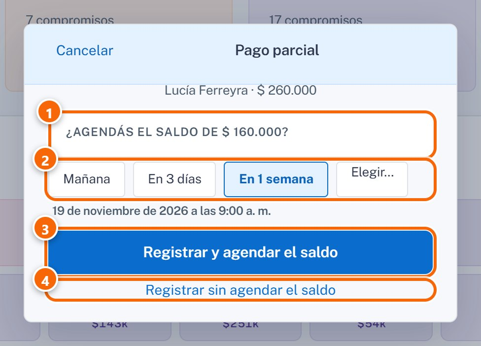
- La app calcula el saldo que falta.
- Cuándo paga el resto: Mañana, En 3 días, En 1 semana o Elegir…
- Registrar y agendar el saldo: crea un compromiso nuevo por lo que falta, en esa fecha.
- Registrar sin agendar el saldo: solo guarda lo recibido.
El compromiso nuevo por el saldo queda enlazado al original: en la ficha vas a ver de dónde salió.
Avisó que paga otro día
Tocá Reprogramar, elegí el día nuevo y, si cambió, el monto.
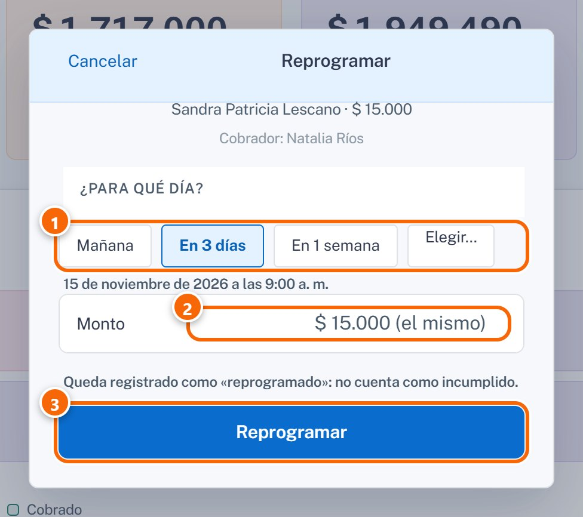
- ¿Para qué día? Mañana, En 3 días, En 1 semana o Elegir…
- Monto: viene el mismo; cambialo si el cliente va a pagar otro importe.
- Reprogramar.
El original queda como reprogramado, que no es un incumplimiento: no baja el cumplimiento. El compromiso nuevo queda a nombre de quien cargó el original.
No pagó, o querés cargar los detalles
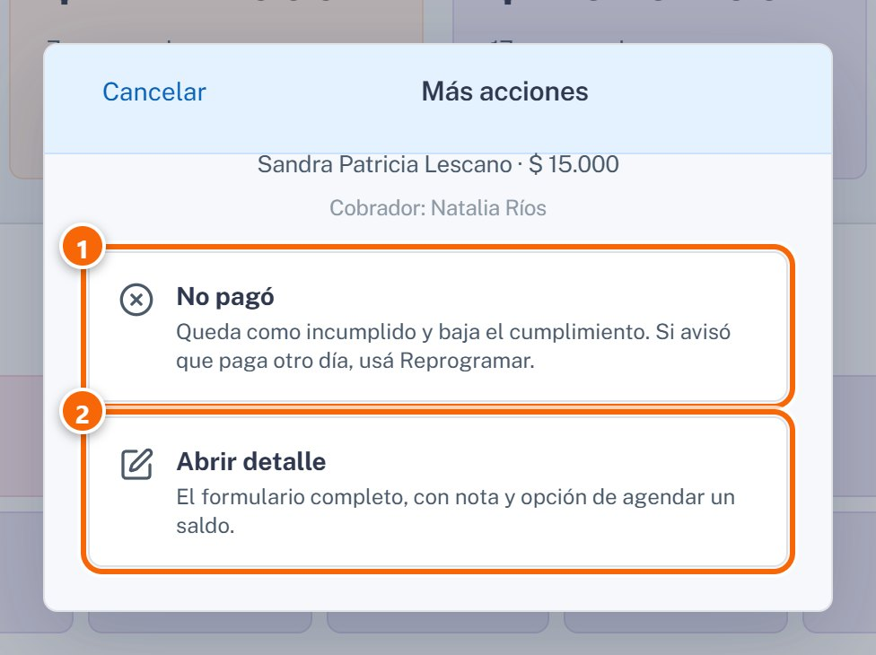
- No pagó. Queda como incumplido y baja el cumplimiento. Si el cliente avisó que paga otro día, usá Reprogramar.
- Abrir detalle. El formulario completo, con nota y opción de agendar el saldo.
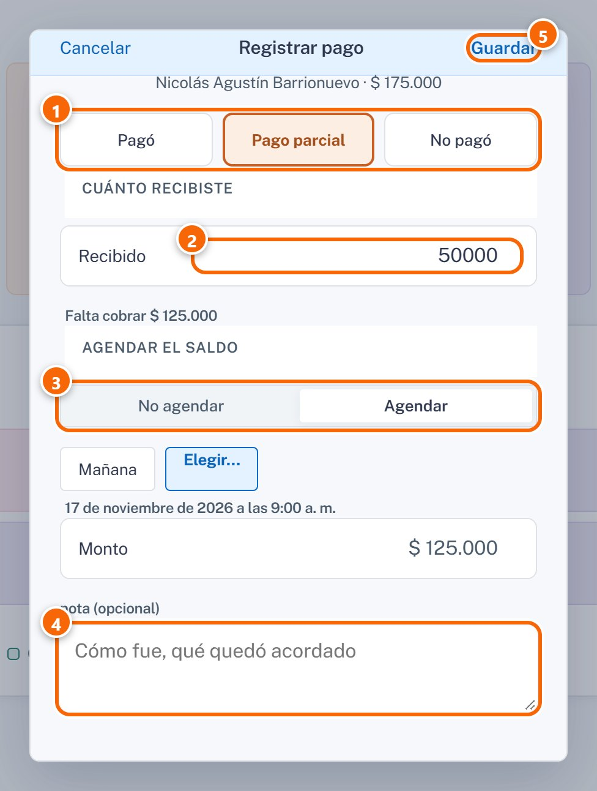
- Resultado: Pagó, Pago parcial o No pagó.
- Cuánto recibiste (en un pago parcial). Abajo muestra cuánto falta cobrar.
- Agendar el saldo (o volver a agendar, si no pagó): elegí la fecha y el monto.
- Nota opcional: cómo fue, qué quedó acordado.
- Guardar.
No pasa nada: la app guarda solo el primero y al segundo le avisa que ese compromiso ya estaba registrado.
7Cargar un compromiso nuevo
Cada vez que un cliente promete un pago, cargalo. Entrá a Pagos y tocá Nuevo compromiso, o desde la ficha del cliente, Pago.
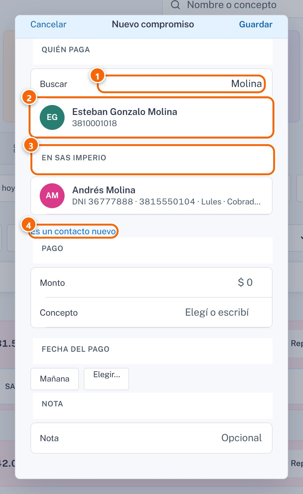
- Buscar por nombre, celular o DNI.
- En la Agenda: contactos que ya están cargados.
- En SAS Imperio: clientes de SAS que todavía no están en la Agenda. Al elegir uno, se crea el contacto con sus datos y su cobrador.
- Es un contacto nuevo: si no está en ningún lado, cargás nombre y celular ahí mismo.
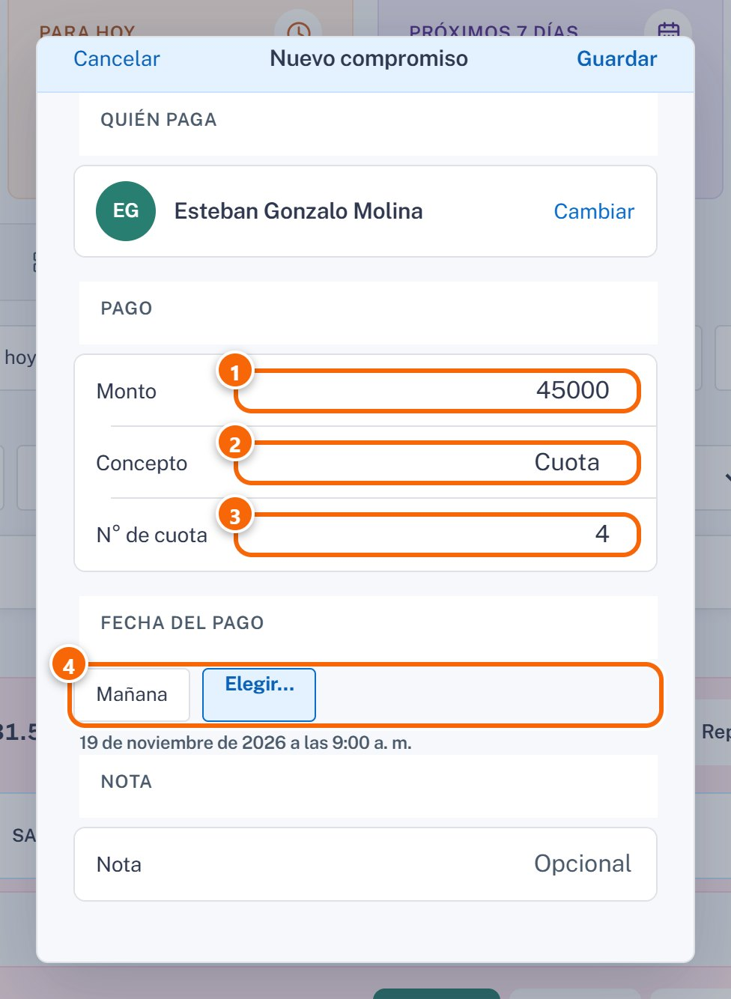
- Monto, sin puntos (45000).
- Concepto: Cuota, Saldo, Refinanciación, Entrega u Otro.
- N° de cuota: aparece cuando el concepto es Cuota.
- Fecha del pago: Mañana o Elegir… Abajo se confirma el día elegido.
Al final podés agregar una nota y tocás Guardar. El compromiso queda firmado con tu nombre y aparece en Hoy, en Pagos, en el Calendario y en la ficha del cliente. El día del pago te llega un aviso.
- Un compromiso es un solo pago. Si el cliente promete $20.000 el viernes y $20.000 el viernes siguiente, cargá dos.
- Para corregir el monto, la fecha o el concepto de uno pendiente, abrí la ficha del cliente y tocá Editar en ese compromiso. Ahí también está Eliminar compromiso, para uno cargado por error.
8Recordatorios por WhatsApp
El botón WhatsApp de la tarjeta abre el chat con el cliente y el mensaje ya escrito. Solo tenés que revisarlo y mandarlo.
La app elige el mensaje según la fecha del compromiso: uno para antes del vencimiento, otro para cuando vence hoy y otro para cuando ya está vencido. Al tocar el botón queda anotado en la ficha («WhatsApp: recordatorio de pago…») y en la tarjeta se ve el último aviso, con quién lo mandó.
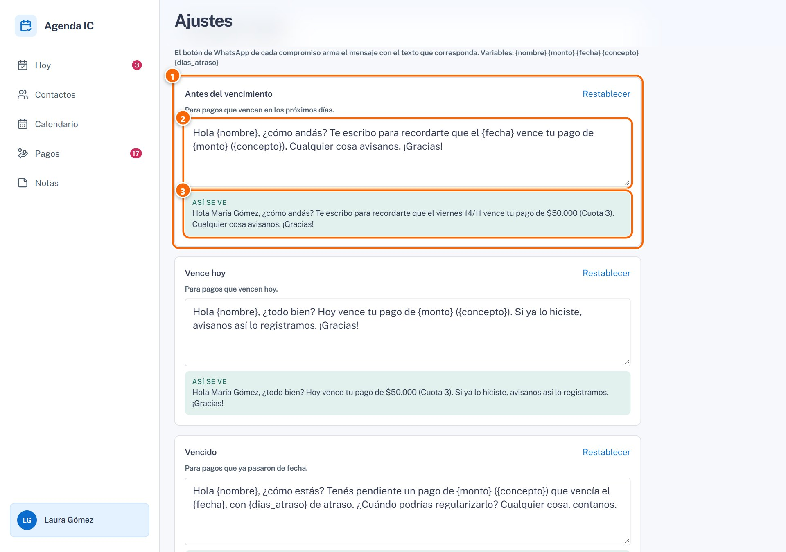
- Plantilla: Antes del vencimiento, Vence hoy o Vencido.
- Texto del mensaje, con las variables entre llaves.
- Así se ve: el mensaje con datos de ejemplo.
El administrador edita los textos en Ajustes › Mensajes de WhatsApp. Las palabras entre llaves se reemplazan solas:
| Variable | Se reemplaza por | Ejemplo |
|---|---|---|
| {nombre} | El nombre del cliente | Rosa |
| {monto} | El monto del compromiso | $ 54.000 |
| {fecha} | La fecha del pago | 11/11 |
| {concepto} | El concepto | Cuota 7 |
| {dias_atraso} | Los días de atraso (en el mensaje de vencido) | 1 |
El botón Restablecer vuelve al texto original de esa plantilla.
9La pantalla Pagos
En Pagos están todos los compromisos, no solo los de esta semana. Sirve para buscar, filtrar, ver cómo viene cada uno y bajar los datos a Excel.
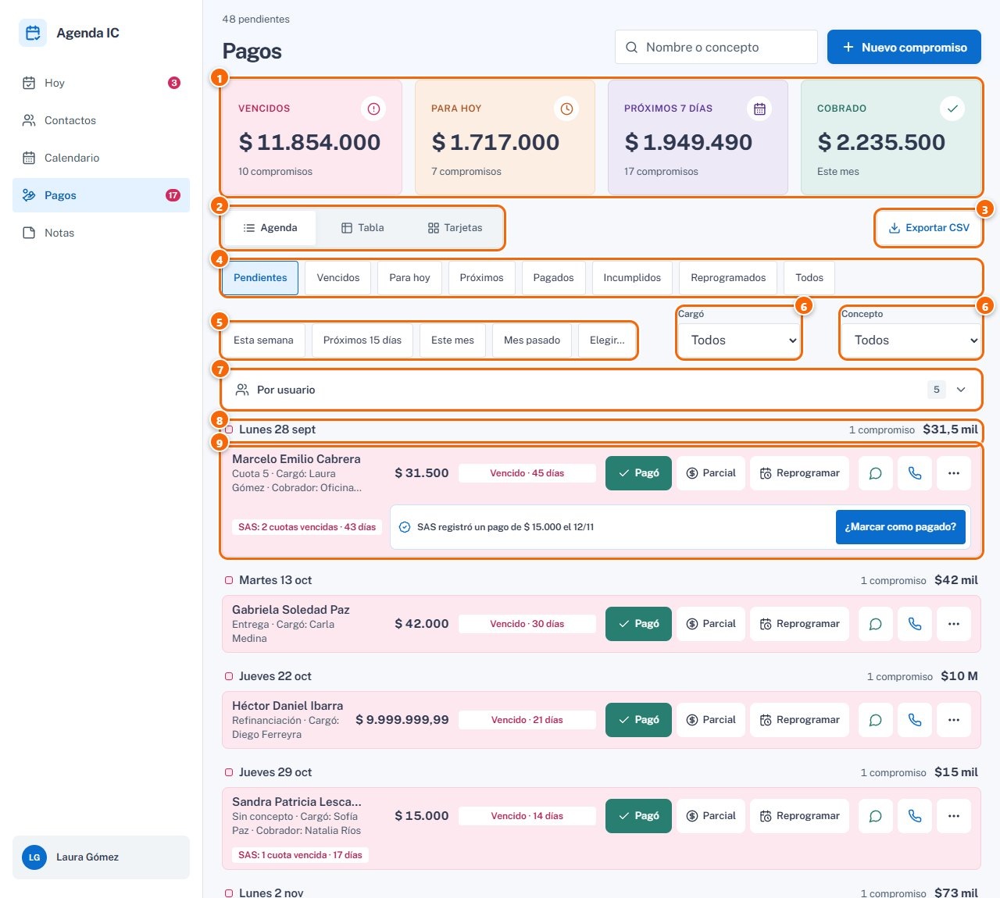
- Totales de lo que estás viendo: vencidos, para hoy, próximos 7 días y cobrado este mes.
- Vistas: Agenda (por día), Tabla y Tarjetas.
- Exportar CSV: baja la lista filtrada para abrirla en Excel.
- Estado: Pendientes, Vencidos, Para hoy, Próximos, Pagados, Incumplidos, Reprogramados o Todos.
- Fechas: Esta semana, Próximos 15 días, Este mes, Mes pasado o Elegir…
- Cargó y Concepto: filtran por quién cargó el compromiso y por tipo de pago.
- Por usuario: el cumplimiento de cada persona del equipo.
- Cada día con su cantidad y su total.
- Cada fila es un compromiso, con los mismos botones de la tarjeta.
Arriba, el buscador Nombre o concepto encuentra un compromiso puntual.
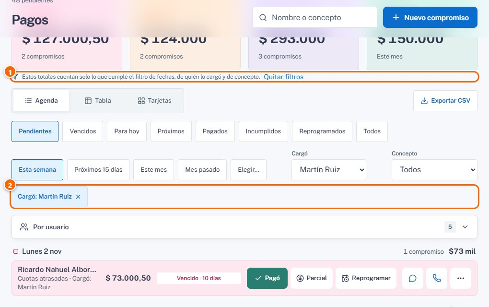
- Resumen de lo que estás filtrando.
- Chips: tocá la ✕ de cada uno para sacar ese filtro.
Los totales de arriba siempre se calculan sobre lo que estás viendo. Por ejemplo, con Este mes + Cargó: Martín Ruiz ves cuánto tiene vencido y cobrado Martín este mes.
Tabla y Tarjetas
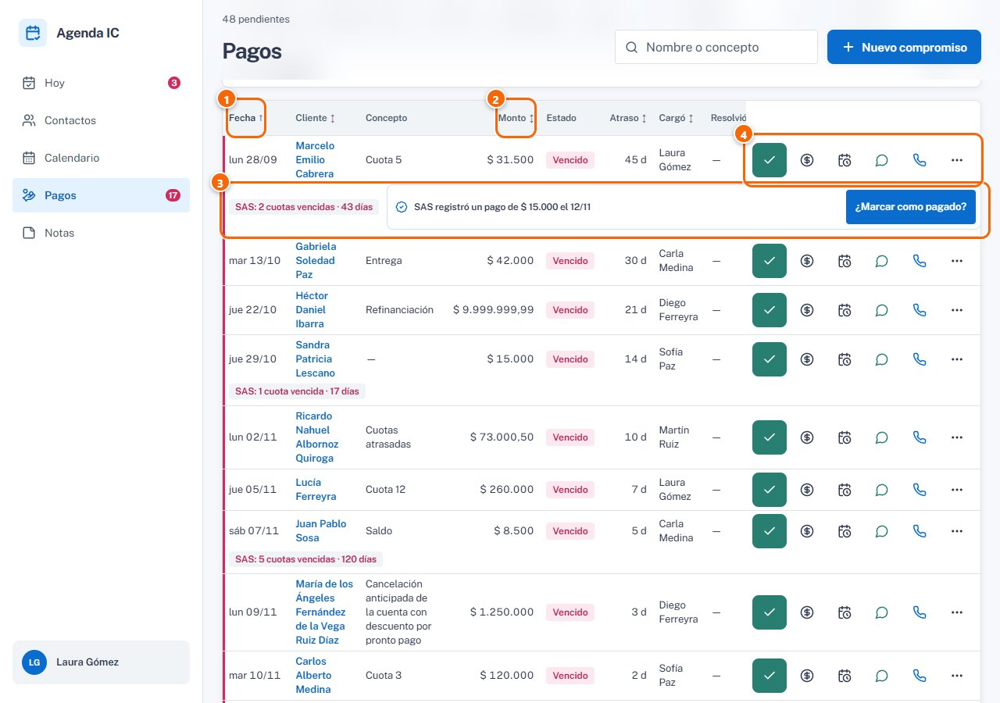
- Columna que ordena la tabla (acá, Fecha). Las columnas son Fecha, Cliente, Concepto, Monto, Estado, Atraso, Cargó y Resolvió.
- Ordenar: tocá un título con flechitas (Fecha, Cliente, Monto, Atraso, Cargó); otra vez, para invertir el orden.
- Fila con datos de SAS debajo del cliente.
- Acciones siempre visibles a la derecha, aunque la tabla se desplace.
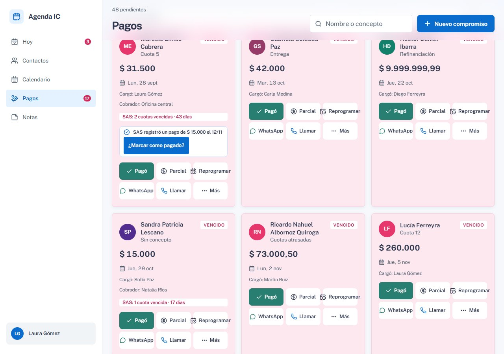
Por usuario: cómo viene cada uno
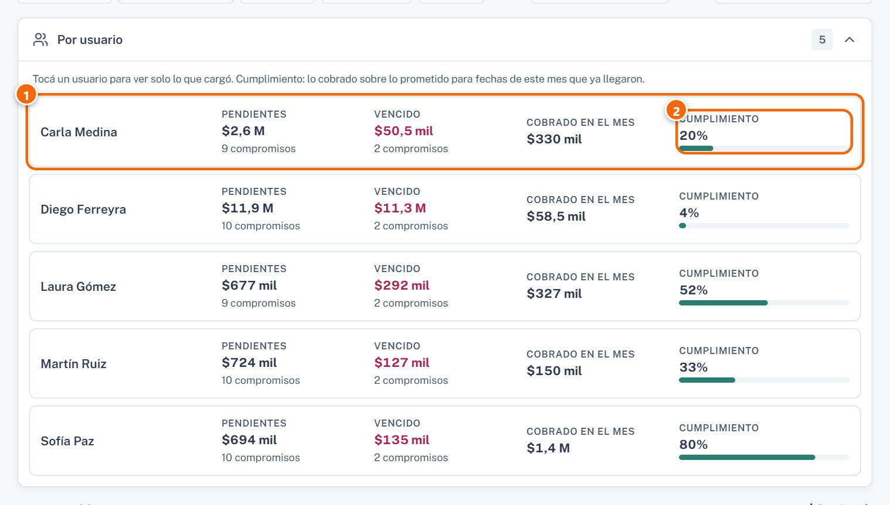
- Cada persona del equipo: sus compromisos pendientes, lo vencido y lo cobrado en el mes. Tocá una para ver solo lo que cargó esa persona.
- Cumplimiento del mes, en porcentaje.
Se toman los compromisos con fecha de este mes que ya llegó y se compara lo cobrado contra lo prometido. Un reprogramado no cuenta, porque el cliente avisó. Un parcial con el saldo agendado cuenta por lo que pagó; el saldo se mide en su propia fecha. Un incumplido sí baja el porcentaje.
Exportar a Excel
Exportar CSV baja exactamente lo que estás viendo, con estas columnas: Fecha, Cliente, Celular, Concepto, Monto, Pagado, Estado, Atraso (días), Cargó, Resolvió, Fecha de registro y Nota. El archivo se abre con doble clic en Excel.
10Datos de SAS Imperio
Si el contacto está vinculado con su cliente de SAS Imperio, la Agenda muestra lo que SAS sabe de él. Es solo para mirar: la Agenda nunca cambia nada en SAS.
Los datos de SAS aparecen en tres lugares:
- El chip de la tarjeta, en rosa: «SAS: 2 cuotas vencidas · 43 días».
- La sugerencia «SAS registró un pago de $15.000 el 12/11 · ¿Marcar como pagado?», cuando SAS tiene un pago posterior a la fecha del compromiso. La Agenda nunca lo marca sola: vos decidís, y si te equivocás tenés el Deshacer.
- El bloque En SAS Imperio de la ficha: créditos activos y saldo, cuotas vencidas y el atraso de la más vieja, último pago confirmado y los pagos que informó el cobrador y todavía no se aprobaron.
- Los montos son sin mora.
- El atraso se cuenta en días hábiles (lunes a sábado), igual que en SAS.
- Los datos se actualizan cada 10 minutos. En la ficha, Actualizar los trae en el momento.
- Si SAS no responde, la Agenda sigue funcionando sin esos datos.
Vincular un contacto con SAS
Los contactos que se cargan eligiendo un cliente de SAS ya quedan vinculados. Para uno que se cargó a mano, abrí su ficha y tocá Vincular con SAS.
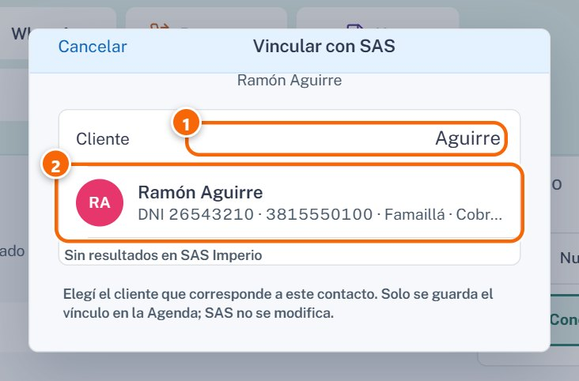
- Buscá por celular, DNI o apellido.
- Tocá el cliente correcto. Revisá el DNI antes de elegir.
Al vincular, el contacto toma el DNI y el cobrador que tiene en SAS, que después se ve en las tarjetas, el Calendario, Pagos y la ficha. Si lo vinculaste con el cliente equivocado, en la ficha está Desvincular de SAS.
11Cargar una consulta
Cuando alguien pregunta por un producto, tocá Nueva consulta (en el celular, el botón azul +).
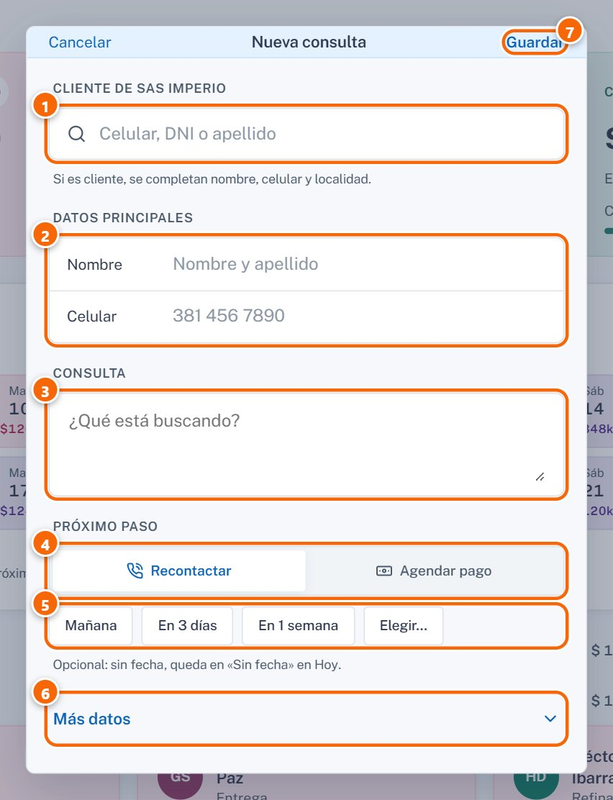
- Cliente de SAS Imperio: si ya es cliente, buscalo y se completan nombre, celular y localidad.
- Nombre y celular. El celular se escribe como lo diga la persona (381 456 7890); la app lo ordena sola.
- Consulta: qué está buscando.
- Próximo paso: Recontactar (volver a llamarlo) o Agendar pago.
- Cuándo: Mañana, En 3 días, En 1 semana o Elegir… Es opcional: sin fecha, queda en «Sin fecha» en Hoy.
- Más datos: producto de interés, localidad, origen, etiquetas.
- Guardar.
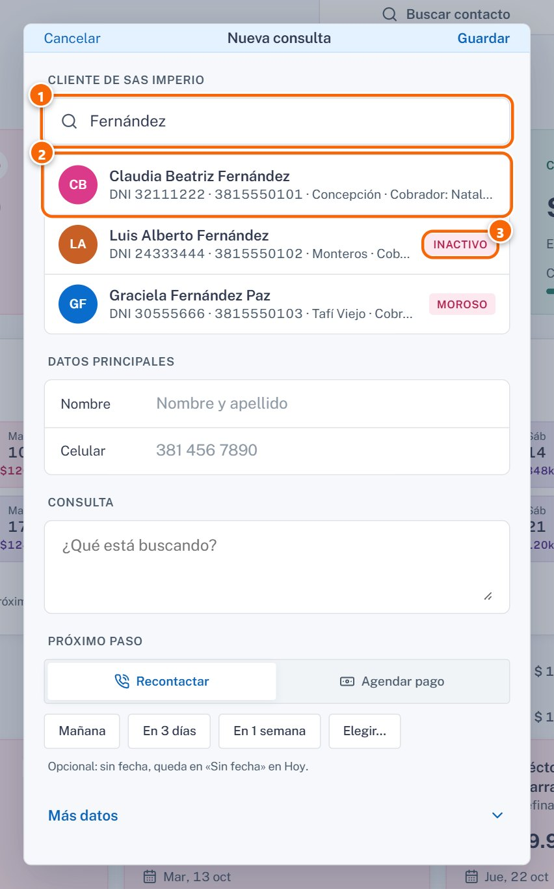
- Búsqueda por celular, DNI o apellido.
- Resultado con DNI, localidad y cobrador.
- Chip Moroso o Inactivo, si corresponde.
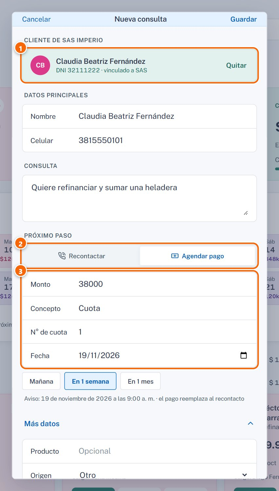
- Cliente vinculado con SAS.
- Agendar pago en el próximo paso.
- Monto, concepto, cuota y fecha, igual que en un compromiso nuevo.
Si el celular ya existe en la Agenda, la app avisa a quién pertenece. Con Agregar consulta la sumás a ese contacto, sin duplicarlo; con Cancelar volvés a revisar.
12Contactos y la ficha
En Contactos están todas las personas cargadas. Tocá una para abrir su ficha.
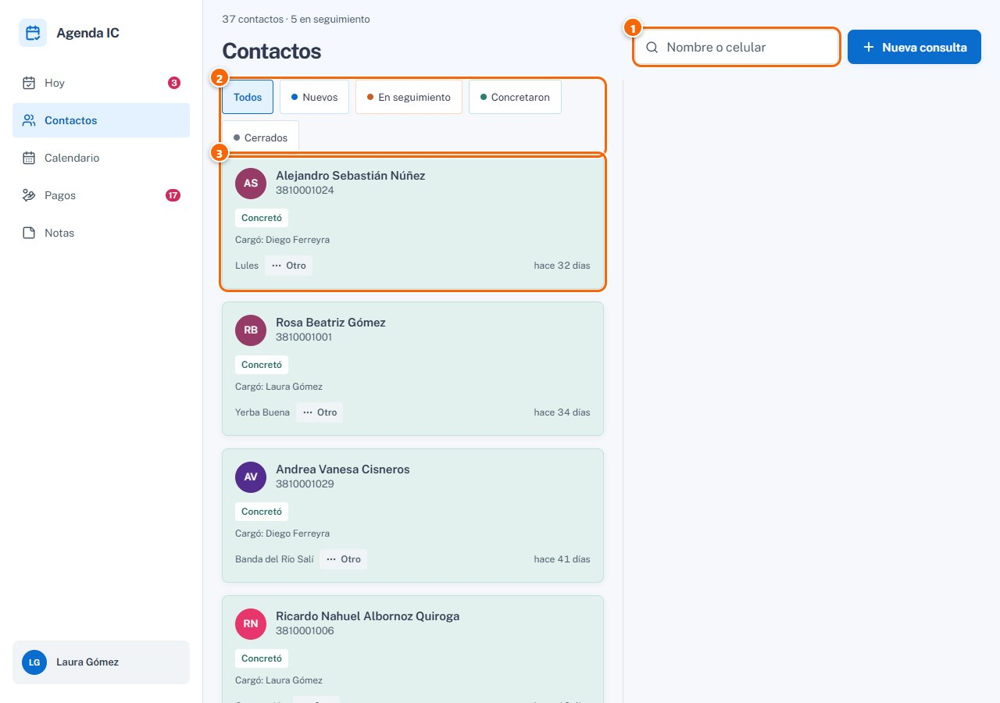
- Buscador por nombre, celular o consulta.
- Estado: Todos, Nuevos, En seguimiento, Concretaron o Cerrados.
- Cada tarjeta abre la ficha.
La ficha
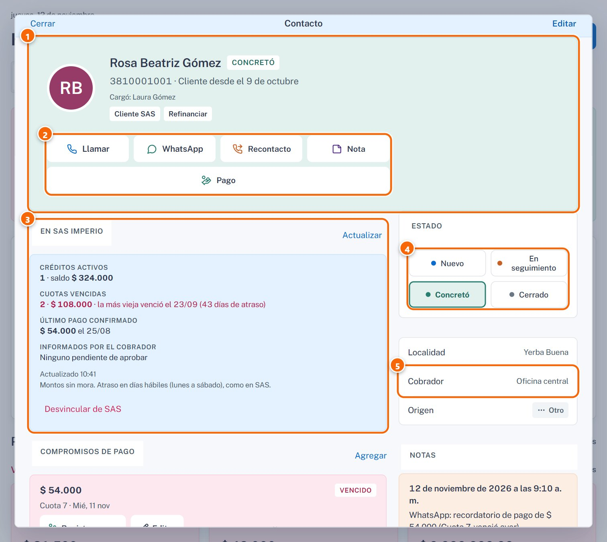
- Quién es: nombre, estado, celular, desde cuándo es cliente, quién lo cargó y sus etiquetas.
- Acciones: Llamar, WhatsApp, Recontacto, Nota y Pago (compromiso nuevo).
- En SAS Imperio: créditos, cuotas vencidas, último pago e informados por el cobrador.
- Estado: Nuevo, En seguimiento, Concretó o Cerrado.
- Cobrador asignado en SAS, junto con la localidad y el origen.
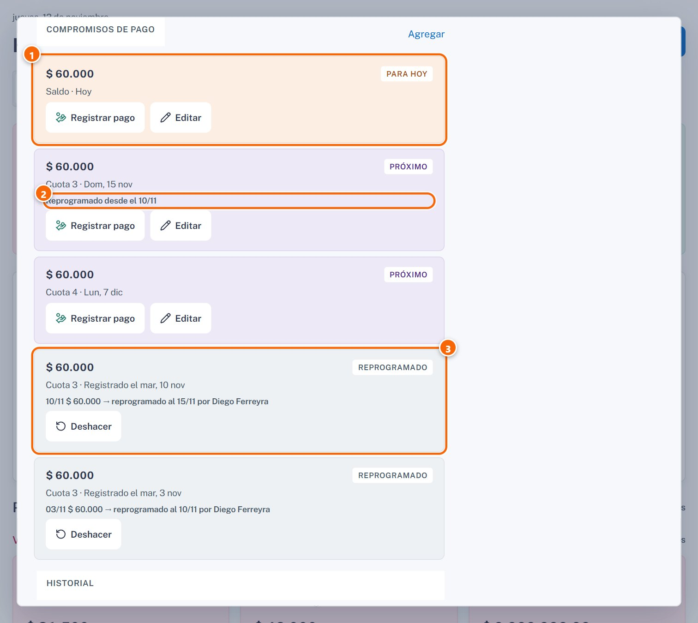
- Pendiente, con Registrar y Editar.
- De dónde salió: «Reprogramado desde el 10/11».
- Uno ya registrado (acá, reprogramado), con su botón Deshacer.
Más abajo están las notas y el historial: cada llamada, WhatsApp y registro, con fecha y quién lo hizo.
- Editar (arriba a la derecha) cambia los datos del contacto.
- Eliminar un contacto borra también sus compromisos, su historial y sus etiquetas, y no se puede deshacer. Si solo dejó de interesarle, mejor cerralo con su motivo.
13Recontactos
Después de llamar o escribirle a alguien que consultó, registrá cómo te fue. Abrí su ficha y tocá Recontacto.
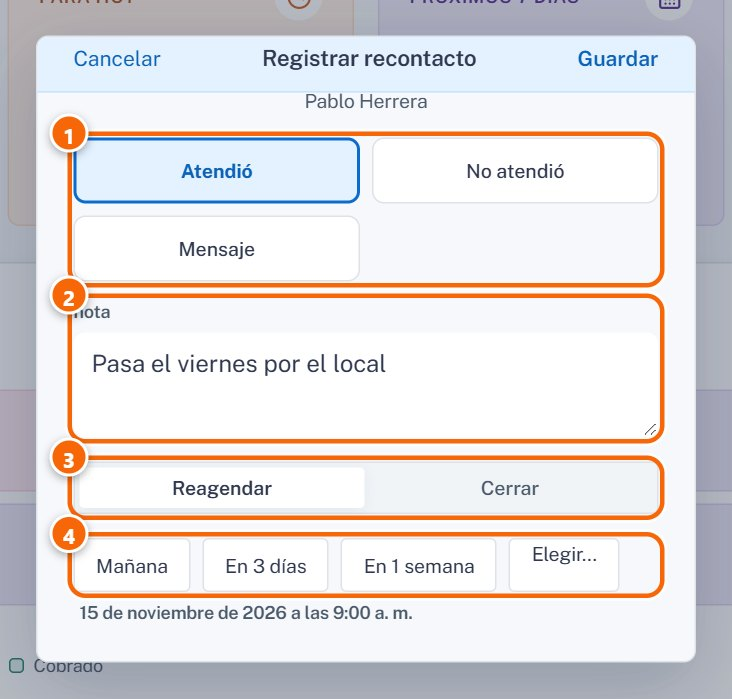
- Resultado: Atendió, No atendió o Mensaje.
- Nota: qué te dijo.
- Reagendar (lo volvés a llamar) o Cerrar la consulta.
- Cuándo volver a llamarlo.
- Si elegís Cerrar, indicás el motivo: Concretó, No interesa o Sin respuesta.
- Un contacto cerrado se puede reabrir desde su ficha, con el mismo botón.
- Si no podés atenderlo ahora, en Hoy tenés Posponer.
14Calendario
El Calendario muestra juntos los pagos a cobrar y los recontactos, por mes, semana o día.
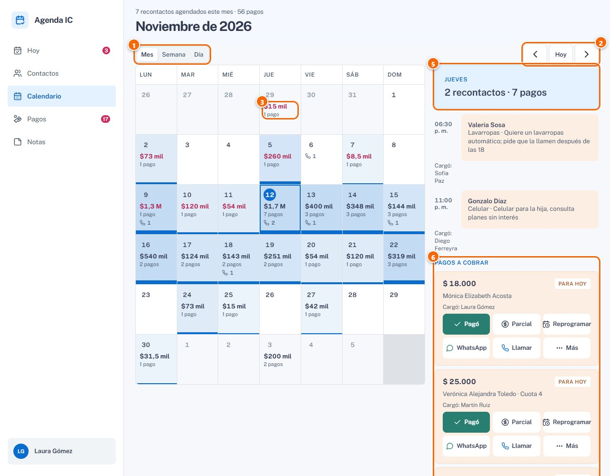
- Vistas: Mes, Semana y Día.
- Flechas para moverte y Hoy para volver.
- Importe del día: lo que hay para cobrar.
- Leyenda de colores.
- Resumen del día elegido.
- Pagos a cobrar de ese día, con los botones de siempre.
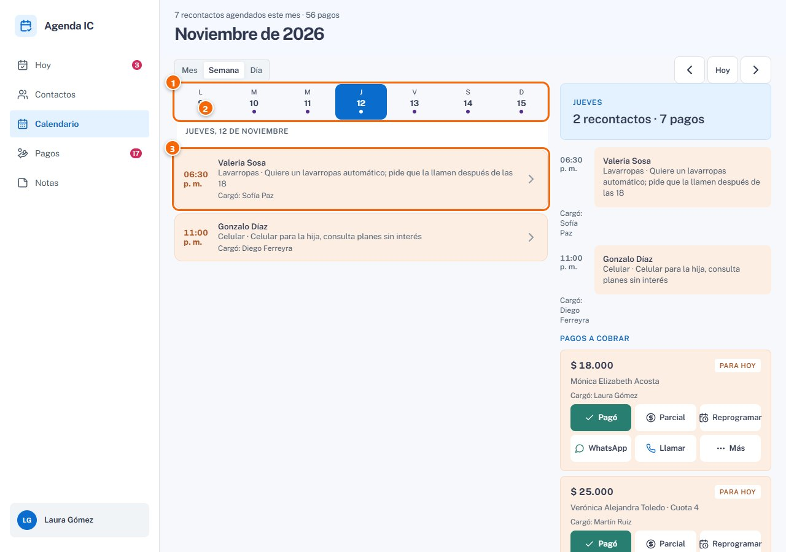
- Tira de los siete días.
- Punto: ese día tiene algo cargado.
- Cada ítem del día elegido: tocalo para ver el detalle.
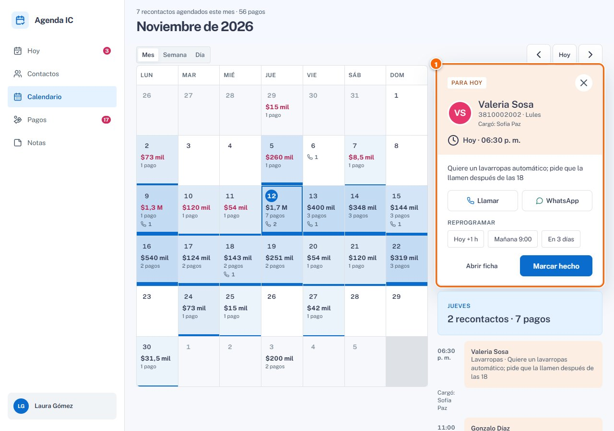
- Detalle con los datos y las acciones, sin salir del Calendario.
15Notas
Notas es un tablero para el equipo: avisos, pendientes, datos útiles. Cada nota puede tener color, recordatorio y estar vinculada a un contacto.
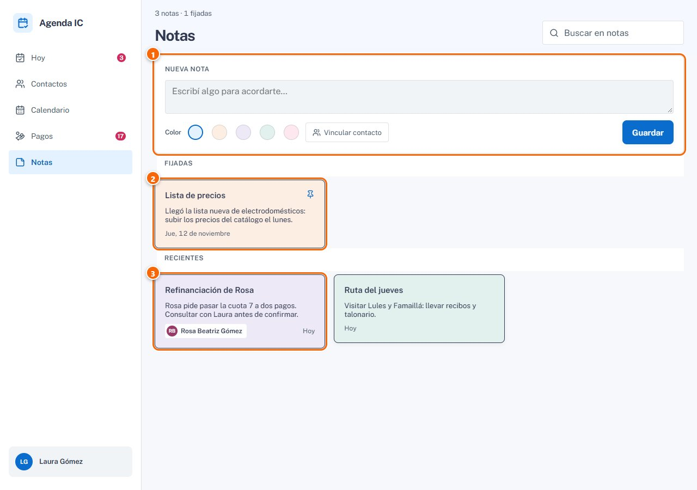
- Escribí una nota y guardala.
- Notas del equipo, con su color.
- Tocá una para abrirla y editarla.
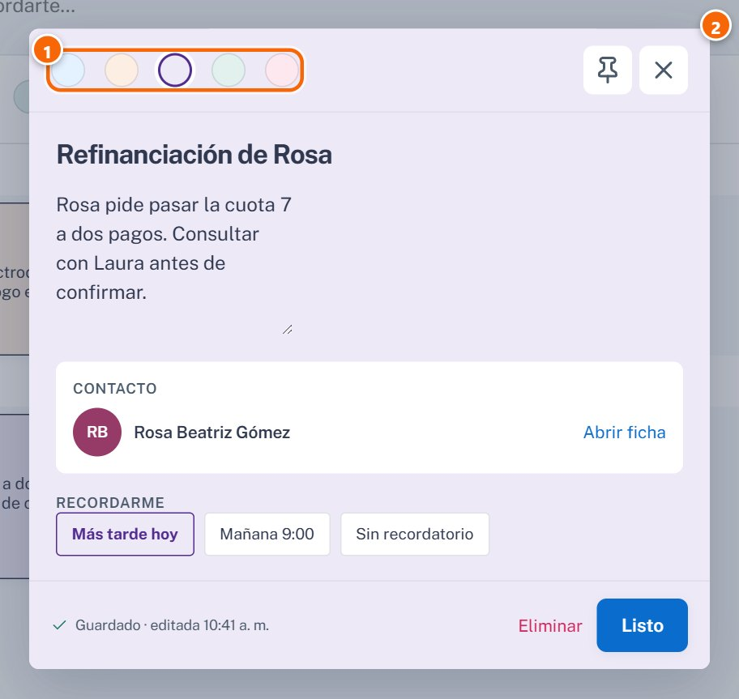
- Colores para ordenarlas a simple vista.
- Barra: fijar la nota (queda primera en el tablero) y cerrar el editor.
Más abajo en el editor están el título, el texto, el contacto vinculado, Recordarme y Eliminar. Una nota con recordatorio te avisa con una notificación a la hora elegida. En el celular, Notas está en Ajustes › Notas.
16Ajustes y notificaciones
En Ajustes instalás la app, activás las notificaciones y cambiás tu contraseña. En la compu se entra tocando tu nombre, abajo a la izquierda.
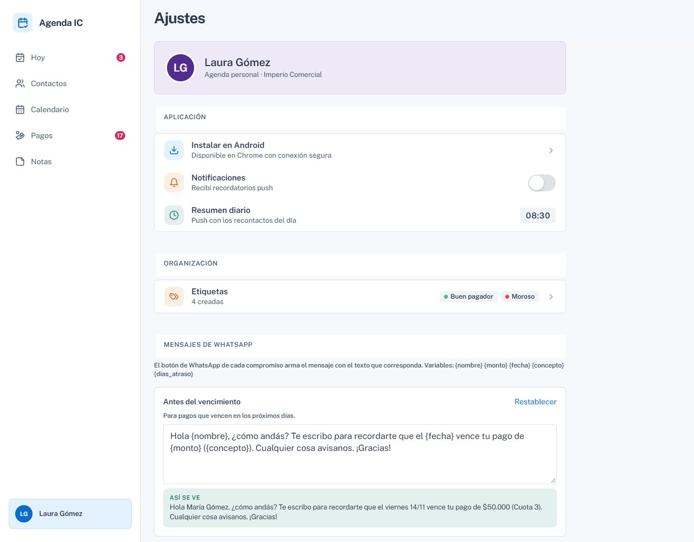
Activar las notificaciones
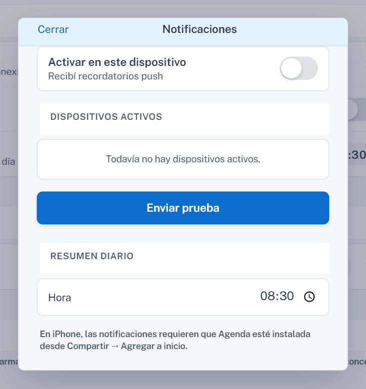
Con las notificaciones activas te llegan:
- Cobrar a Rosa Gómez · «$54.000 · Cuota 7», el día de cada compromiso. Si son muchos juntos, llega uno solo: «Pagos a cobrar: tenés 8 pagos a cobrar por $…».
- Recontactar a Pablo Herrera, a la hora del recontacto.
- Los recordatorios de tus notas.
- El resumen diario, por ejemplo «Hoy: 2 para recontactar, 1 vencidos · 17 pagos a cobrar ($13.571.000,49)». Llega a la hora que figura en Resumen diario (8:30 si nadie la cambió). La hora es la misma para todo el equipo: si la cambiás, cambia para todos.
Tocando la notificación de un pago o de un recontacto se abre la ficha del cliente.
Contraseña y sesiones
- Ajustes › Cambiar contraseña: la nueva tiene que tener al menos 10 caracteres.
- Cerrar sesión en todos los dispositivos: si perdiste el celular o usaste una compu ajena.
- Etiquetas: las etiquetas que se ponen a los contactos («Refinanciar», «Cliente SAS»…).
17Usuarios y roles
Cada persona tiene su propio usuario. No compartas el tuyo: todo lo que cargás queda con tu nombre.
| Puede… | Supervisor | Administrador |
|---|---|---|
| Ver y cargar contactos, consultas, compromisos y notas | Sí | Sí |
| Registrar pagos y deshacerlos | Sí | Sí |
| Ver el cumplimiento de todo el equipo | Sí | Sí |
| Editar las plantillas de WhatsApp | No | Sí |
| Crear y eliminar usuarios | No | Sí |
Dar de alta a alguien (administrador)
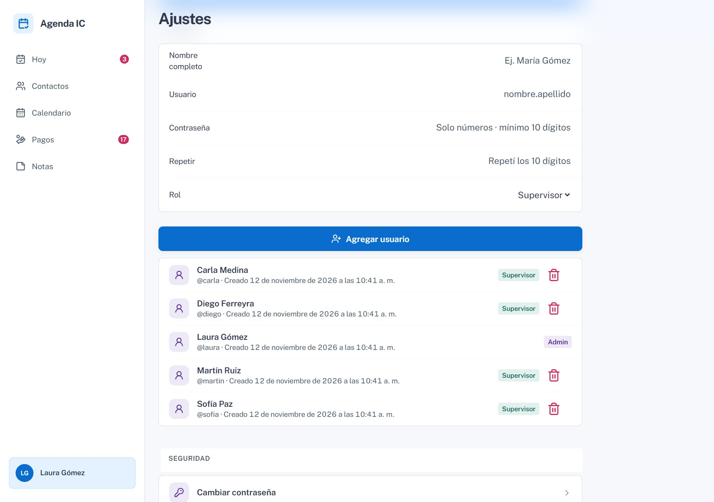
- Entrá a Ajustes › Equipo.
- Completá Nombre completo, Usuario (por ejemplo nombre.apellido) y el Rol.
- Escribí la contraseña inicial dos veces. Tiene que ser de solo números, al menos 10: así se escribe rápido en el teclado del celular. Después cada uno la puede cambiar.
- Tocá Agregar usuario y pasale el usuario y la contraseña a la persona.
Si eliminás un usuario, lo que cargó sigue firmado con su nombre.
18Estados y colores
Los colores significan siempre lo mismo, en todas las pantallas.
Compromisos de pago
| Estado | Color | Qué significa |
|---|---|---|
| Vencido | Vencido | Pendiente y la fecha ya pasó. |
| Para hoy | Para hoy | Pendiente, vence hoy. |
| Próximo | Próximo | Pendiente, vence más adelante. |
| Pagado | Pagado | Pagó todo. |
| Parcial | Parcial | Pagó una parte. El saldo puede estar agendado como otro compromiso. |
| Reprogramado | Reprogramado | Avisó que paga otro día; hay un compromiso nuevo. No baja el cumplimiento. |
| Incumplido | Incumplido | No pagó. Baja el cumplimiento. |
Contactos
| Estado | Color | Qué significa |
|---|---|---|
| Nuevo | Nuevo | Recién cargado, todavía sin recontactos. |
| En seguimiento | En seguimiento | Ya hubo contacto y tiene un próximo llamado. |
| Concretó | Concretó | Compró o ya es cliente. |
| Cerrado | Cerrado | No le interesa o no respondió. |
19Ejemplos paso a paso
Las situaciones de todos los días, resueltas de punta a punta.
Pagó todo
Rosa Gómez tenía que pagar hoy $54.000 de la cuota 7 y vino a pagar.
- En Hoy › Pagos a cobrar, buscá su tarjeta en el grupo Hoy.
- Tocá Pagó.
- Listo: la tarjeta pasa a pagado y sube el cobrado del mes.
Pagó una parte y el resto el viernes
Lucía Ferreyra debía $260.000, trajo $100.000 y dice que el resto lo paga el viernes.
- En su tarjeta, tocá Parcial.
- En Recibido escribí 100000 y tocá Continuar.
- La app pregunta «¿Agendás el saldo de $160.000?». Tocá Elegir… y marcá el viernes.
- Tocá Registrar y agendar el saldo.
- Queda un parcial por $100.000 y un compromiso nuevo por $160.000 para el viernes.
Avisa que paga el lunes
Silvia Juárez escribe: «Esta semana no llego, te pago el lunes».
- Tocá Reprogramar en su tarjeta.
- Elegí el lunes. Si va a pagar otro monto, cambialo.
- Tocá Reprogramar. El original queda reprogramado (no cuenta como incumplido) y el lunes aparece el nuevo.
No pagó ni avisó
El compromiso de Héctor Ibarra venció hace tres días y no responde.
- Mandale el recordatorio con WhatsApp: sale el mensaje de «vencido».
- Si no hay respuesta y no se va a cobrar, tocá Más › No pagó.
- Si después promete pagar, cargá un compromiso nuevo con la fecha que te dé.
Mandar el recordatorio antes de que venza
Mañana vence la cuota de Esteban Molina y querés recordárselo hoy.
- En Hoy, buscá su tarjeta en el grupo de mañana (o en Pagos con el filtro Próximos).
- Tocá WhatsApp: se abre el chat con el mensaje «antes del vencimiento».
- Revisalo y mandalo. En la tarjeta queda el último aviso con tu nombre.
Un cliente nuevo promete pagar
Llama alguien que todavía no está en la Agenda y promete una entrega de $80.000 para el día 20.
- Entrá a Pagos y tocá Nuevo compromiso.
- Buscalo por apellido o DNI. Si aparece en En SAS Imperio, elegilo: se crea con sus datos y su cobrador.
- Si no aparece en ningún lado, tocá Es un contacto nuevo y cargá nombre y celular.
- Monto 80000, concepto Entrega, fecha Elegir… › día 20. Guardar.
SAS dice que ya pagó
En la tarjeta de Marcelo Cabrera aparece «SAS registró un pago de $15.000 el 12/11 · ¿Marcar como pagado?».
- Fijate si el pago de SAS corresponde a este compromiso (el monto y la fecha).
- Si pagó todo, tocá ¿Marcar como pagado?. Si pagó menos de lo prometido, usá Parcial.
- Si no corresponde, ignorá la sugerencia: la Agenda no marca nada sola.
Me equivoqué de botón
Tocaste Pagó en el cliente equivocado.
- Tocá Deshacer en el aviso de abajo (dura 6 segundos).
- Si ya se fue, abrí la ficha del cliente y tocá Deshacer en ese compromiso. Vuelve a pendiente.
- Si lo que reprogramaste fue un error, al deshacerlo también se borra el compromiso nuevo (si todavía está pendiente).
¿Cómo vengo este mes?
Querés saber cuánto cobraste de lo que cargaste vos.
- En Hoy, elegí Míos: los totales y el cumplimiento pasan a ser solo de tus compromisos.
- Para compararte con el resto, en Pagos abrí Por usuario.
¿Qué hay para cobrar la semana que viene?
Querés organizar la ruta de cobro de la semana próxima.
- Mirá la segunda fila de la tira Próximos 14 días en Hoy: tenés el total de cada día.
- Para la lista completa, en Pagos elegí Pendientes y Próximos 15 días, o Elegir… con las fechas exactas.
- Si la necesitás en papel o en Excel, tocá Exportar CSV.
20Preguntas frecuentes
No me llegan las notificaciones al celular.
- Revisá que estén activas en Ajustes › Notificaciones en ese dispositivo.
- En iPhone, la app tiene que estar agregada a Inicio y abierta desde ese ícono.
- Revisá que el celular no tenga silenciadas las notificaciones del navegador o de la app.
¿Cuál es la diferencia entre «Reprogramar» y «No pagó»?
Reprogramar es cuando el cliente avisó que paga otro día: no cuenta como incumplimiento y se crea el compromiso nuevo. No pagó es cuando no cumplió: queda incumplido y baja el cumplimiento.
Un pago de hoy, ¿cuándo pasa a vencido?
A la medianoche. Durante todo el día sigue «para hoy», aunque la hora ya haya pasado.
Cargué un cliente que ya existía, ¿se duplicó?
No. Si el celular ya está cargado, la app avisa «Este número ya está cargado» y te ofrece sumar la consulta al contacto existente. Lo mismo al cargar un compromiso con un contacto nuevo: si el celular ya existe, usa ese contacto.
¿Por qué no veo el chip de SAS en un cliente?
Porque el contacto no está vinculado con SAS. Abrí la ficha y tocá Vincular con SAS. Si está vinculado y igual no aparece, puede ser que SAS no esté respondiendo en ese momento; probá más tarde con Actualizar.
¿Puedo cambiar algo de SAS desde la Agenda?
No. La Agenda solo lee los datos de SAS. Los pagos se siguen cargando en SAS como siempre; la Agenda es para seguir las promesas de pago.
¿Qué ve «Míos»?
Los compromisos que cargaste vos, aunque los haya cobrado otra persona.
¿Qué pasa si elimino un contacto?
Se borran también sus compromisos de pago, sus consultas, su historial y sus etiquetas, y no se puede deshacer. Si solo dejó de interesarle, cerralo con su motivo en lugar de eliminarlo.
Olvidé mi contraseña.
Pedile al administrador que te dé un acceso nuevo. Cuando vuelvas a entrar, cambiá la contraseña desde Ajustes › Cambiar contraseña.
¿Funciona sin internet?
Podés abrir la app y ver lo último que se cargó en pantalla, pero para registrar pagos, cargar compromisos o ver datos nuevos necesitás conexión.
¿Por qué la contraseña inicial es de números?
Para que se escriba rápido con el teclado numérico del celular. Al tener al menos 10 dígitos sigue siendo segura. Después podés cambiarla por la que quieras (de 10 caracteres o más).